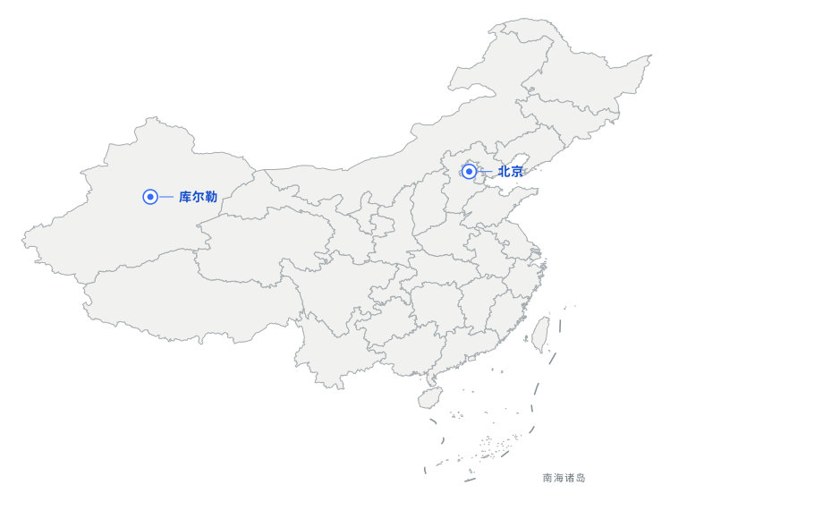

你好，我是 Andy.Z
MY PAGE
把想法变成看得见的东西

ABOUT / 关于我
你好，
MAP DATA / GEOJSON.CN ↗
你好，
我是 Andy.Z
我学数学，经济，也在尝试做AI工具，游戏和写作。我是一个终生好奇者，终生探索者，相信一切科学和技术本身会回到人类边界的拓展和永恒的好奇心
这个网站记录我做过的东西，我所理解的事情和我所不断扩展的边界
常在 / ON THE MAP
联系我 ↗
库尔勒照片与记录待补充
北京照片与记录待补充
01 / WORK
02 / WRITING
03 / RESEARCH
这一栏还在整理。之后会放研究笔记、读过的论文，以及一些自己推导的东西。
04 / GAMES
游戏目录
14每个游戏放什么
- 随笔 / 感想
- 攻略 / 心得
- 截图 / 视频